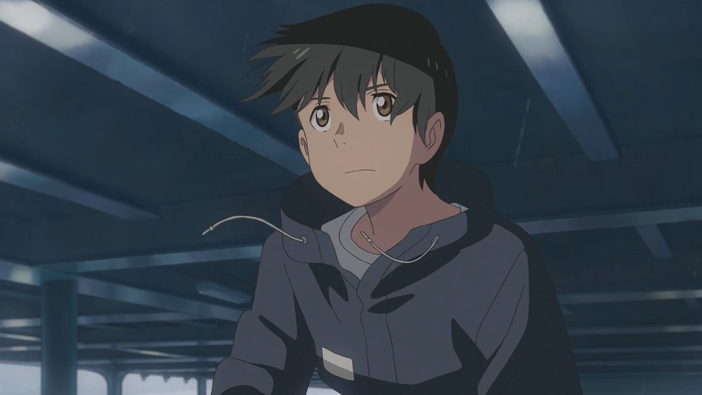

Filme
O Tempo Com Você
Sinopse do filme:
o filme acompanha Hodaka Morishima, um estudante do ensino médio que foge de uma ilha isolada para Tóquio em meio a um verão de chuvas incessantes. Sem dinheiro e sem onde ficar, ele acaba conseguindo um trabalho freelancer para uma revista esotérica
12
1h 52m
2019
Animação
Romance
Fantasia
Drama
Personagens
Hina Amano
Uma garota alegre e determinada que vive sozinha com o irmão mais novo, Nagi, após a morte da mãe. Ela descobre ter o poder sobrenatural de dissipar as nuvens e trazer o sol com uma prece, tornando-se conhecida como a "Garota do Sol". (Voz original: Nana Mori)

Hodaka Morishima
Um estudante de 16 anos que foge de casa em uma ilha remota para tentar a vida em Tóquio. Sem dinheiro, acaba sendo acolhido por Keisuke Suga e passa a trabalhar como redator em uma pequena revista sobre fenômenos sobrenaturais. (Voz original: Kotaro Daigo)